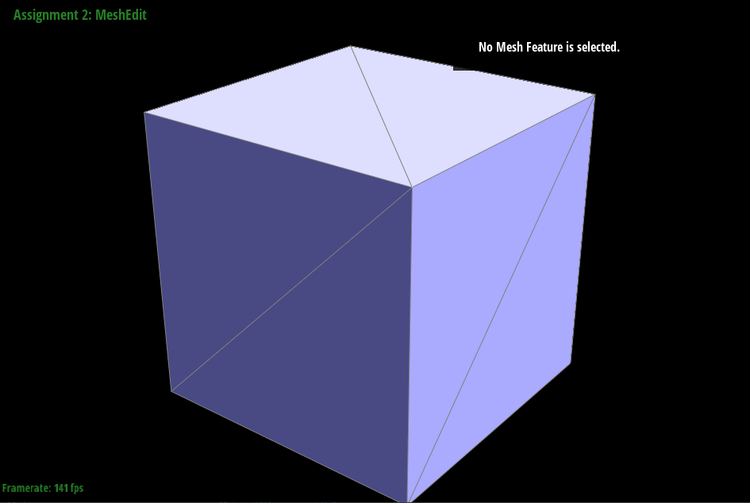
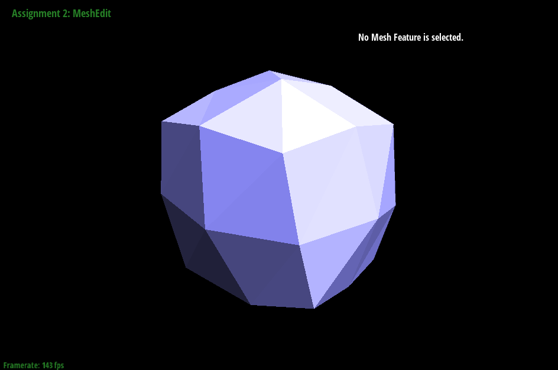

Overview
In this project I first worked on the construction of bezier curves and extending it to bezier surfaces. I then implemented a triangle mesh approach of approximating smooth surfaces and modelling the triangles using the halfedge data structure. As the final task of the assignment I implemented the loop subdivision algorithm, which uses edge flips and edge splits to approximate the mesh at a higher resolution. The hardest part of the project is really just reassigning the halfedges around. Drawing things out definitely helped a lot.
Section I: Bezier Curves and Surfaces
Part 1: Bezier Curves with 1D de Casteljau Subdivision
Briefly explain de Casteljau's algorithm and how you implemented it in order to evaluate Bezier curves.The de Casteljau's algorithm uses recursion to construct bezier curves. To do so, it does a series of linear interpolations on adjacent control points based on parameter t to create n-1 points, then on those points and so on until 1 point remains. This point then corresponds to a point on the bezier curve with the parameter t. By performing this algorithm from t=0 to 1 the algorithm draws out the complete bezier curve.
To implement it I simply filled in evaluateStep which takes a vector of n points and t, then returns n-1 points linearly interpolated based on the n points and t. I assume this function is being called repeatedly elsewhere n-1 times and across a range of t to draw the bezier curve.
Take a look at the provided .bzc files and create your own Bezier curve with 6 control points of your choosing. Use this Bezier curve for your screenshots below.
Show screenshots of each step / level of the evaluation from the original control points down to the final evaluated point. Press E to step through. Toggle C to show the completed Bezier curve as well.
|
|
|
|
|
|
|
|
Show a screenshot of a slightly different Bezier curve by moving the original control points around and modifying the parameter \(t\) via mouse scrolling.
Part 2: Bezier Surfaces with Separable 1D de Casteljau
Briefly explain how de Casteljau algorithm extends to Bezier surfaces and how you implemented it in order to evaluate Bezier surfaces.To extend the algorithm to Bezier surfaces, it defines n^2 control points instead of n. First it takes n points from a single row/column and treat it as the control points for a 1D bezier curve and evaluates the resulting point, and by repeating this process across all rows/columns it obtains n points which serves as the control points for another 1D bezier cruve int he perpendicular direction. By fixing the first parameter u, we derive a single point using the second parameter v and it represents a point on the bezier surfaces for the parameter pair (u,v). It then repeats first across all u and v's to obtain a bezier surface.
To implement this, I first implemented evaluate1D which resolves a set of control points into a single point based on parameter t. After that I implemented evaluate, where I took a 2d grid of control points. This first loops n times resolving each row of the control grid into a point using evaluate1D, and adding them to a vector. And at the end, it resolves these n points into a single point.
Show a screenshot of bez/teapot.bez (not .dae) evaluated by your implementation.
Section II: Triangle Meshes and Half-Edge Data Structure
Part 3: Area-Weighted Vertex Normals
Briefly explain how you implemented the area-weighted vertex normals.To compute the unit normal at a vertex, I need the areas of all of the neighbors as well as the normals of all of the neighbors. In order to get the neighboring faces of a vertex, I used a loop to iterate the vertex's halfedges using the advancement formula of h = h->twin->next, and assuming that the halfedges are correctly constructed, this moves h to the half-edge 1 face ccw/cw of the vertex, eventually back to the same halfedge where the loop will terminate . For each face, I opted to calculate the area of the triangle using the cross product which represents the parallelogram area created by 2 vectors. To get these vectors, I obtained the vector points by iterating the half edge a full cycle and getting the positions at each halfedge's vertex. I then multiplied the area by the face normal (which is simply available as a function call) and summed and normalized them.
Show screenshots of dae/teapot.dae (not .bez) comparing teapot shading with and without vertex normals. Use Q to toggle default flat shading and Phong shading.

|
|
Part 4: Edge Flip
Briefly explain how you implemented the edge flip operation and describe any interesting implementation / debugging tricks you have used.Here's where things got painful (understatement).
I drew a diagram of all of the half edges on the on the abcd triangle pair and checked where they should be before/after. I then listed every thing that possibly could have its properties changed, which were all 4 vertices, 10 half edges, 2 faces, and 5 edges. I then manually assigned every single one of these using e0 as the base and traversing the halfedges. After that, I went through every single element again and used setNeighbors to reassign the next, twin, vertex, edge, face properties for halfedges, and the halfedge property for everything else.
Show screenshots of the teapot before and after some edge flips.
Write about your eventful debugging journey, if you have experienced one.
Everything worked first try, but I thought i ran into a bug when I tried to flip an edge enclosed in a triangle (due to 2 edges overlapping) and it disappearing, ended up debugging nothing for 10 mins or so.
Part 5: Edge Split
Briefly explain how you implemented the edge split operation and describe any interesting implementation / debugging tricks you have used.Basically how I approached task 4 with a minor difference. I listed 4 vertices, 10 halfedges, 2 faces, and 5 edges. In addition, I had to count the additional elements that were added, which were 1 vertex, 6 halfedges, 3 edges, and 2 faces. After that I went through the entire process again assigning the correct attributes to every old and new element. Because the spec mentioned to ensure that everything is still assigned and not to create redundant elements, I had to decide what to assign to the old elements to. Using the abcd quadrilateral as reference, I reused halfedges bm as bc, cm as cb, edge bm as bc, faces abm as abc, cmd as cbd. To compute the actual location, I just calculated the midpoint of the a and d vertices.
Show screenshots of a mesh before and after some edge splits.
Show screenshots of a mesh before and after a combination of both edge splits and edge flips.
Write about your eventful debugging journey, if you have experienced one.
I forgot to assign one of the faces, causing the split to sometimes result in 3 visible faces and 1 deleted one. I thought it was a coloring issue at first because it turned into a dark purple but after while I realized the face is just gone and it was showing the back side of the teapot, Other than that everything went smoothly
If you have implemented support for boundary edges, show screenshots of your implementation properly handling split operations on boundary edges.
YOUR RESPONSE GOES HERE
Part 6: Loop Subdivision for Mesh Upsampling
Briefly explain how you implemented the loop subdivision and describe any interesting implementation / debugging tricks you have used.
I implemented loop subdivision in essentially the exact way the spec described.
Step 1: I iterated through all of the vertices and used the u=3/16 if degree=3 else u = 3/8n method described in class
to compute the new positions of the vertices. I computed original_neighbor_position_sum by iterating and summing through the halfedges of a vertex and getting the vertex of its twin, which should give the vertex across.
Step 2: I iterated through every edge and computed its new positions using the formula 3/8 * (A+B) + 1/8 (C+D). To get these vertices I used the the halfedge->next->next twin->next->next method to go through both triangles.
Step 3: I iterated through every edge and splitted it provided that neither of the 2 vertices that made up the edge are new (discussed later), then assigned the position of the new vertex from the positions computed in step 2.
Step 4: I iterated through every edge and flipped it provided that there is exactly 1 new and 1 old vertex, and that the edge is new.
Step 5: I terated through every vertex and assigned its new position based on step 1, and mark the vertex as not new.
Note: To determine whether a vertex or edge is new, i went back to the split function and assigned the new vertices and the 2 horizontal edges I created as new, and then in step 1 and 2 when I iterated the vertices and edges
I initialized all of them as not new. In doing so, the vertex/edge will only be new when it has been split
Take some notes, as well as some screenshots, of your observations on how meshes behave after loop subdivision. What happens to sharp corners and edges? Can you reduce this effect by pre-splitting some edges?
Loop subdivision general makes the mesh smoother after each iteraton. Because the new positions of vertices and edges are averaged, sharp corners and edges tend to collapse towards the positions of their surroundings. By pre-splitting edges, it effectively increases the density of edges at a spicific place, which means that the average will be skewed towards the particular cluster of edges. This is helpful if that particular edge needs to remain sharp. In addition, pre-splitting can enforce that the final image should look more similar to the original mesh, as splitting by itself increases the resolution without changing the mesh, thus adding more "control" to the geometry. In the example below, I pre-splitted that part of the mesh retains some of its jaggedness after loop subdivision
|
|
|
|
|
|
|
|
|
Load dae/cube.dae. Perform several iterations of loop subdivision on the cube. Notice that the cube becomes slightly asymmetric after repeated subdivisions. Can you pre-process the cube with edge flips and splits so that the cube subdivides symmetrically? Document these effects and explain why they occur. Also explain how your pre-processing helps alleviate the effects.
By splitting the cube at each face from 2 into 4 triangles, the cube retains its symmetricness after being subdivded. This is because without preprocessing, the triangles do not have uniform geometry, which can lead to irregular vertex weights when computing the new locations of the vertices. It can also interfere with the splitting algorithm itself since it can cause midpoints to be calculated at inconsistent locations depending on the orientation of the edge on a particular face. Splitting the edges ensures that each face has an uniform and identical distribution of edges and vertices, which should ensure the loop subdivision algorithm to produce a symmetric result
|

|

|
|
|
|
|
|
YOUR RESPONSE GOES HERE
Part 7 (Optional, Possible Extra Credit)
Save your best polygon mesh as partsevenmodel.dae in your docs folder and show us a screenshot of the mesh in your write-up.YOUR RESPONSE GOES HERE
Include a series of screenshots showing your original mesh and your mesh after one and two rounds of subdivision. If you have used custom shaders, include screenshots of your mesh with those shaders applied as well.
YOUR RESPONSE GOES HERE
Describe what you have done to enhance your mesh beyond the simple humanoid mesh described in the tutorial.
YOUR RESPONSE GOES HERE